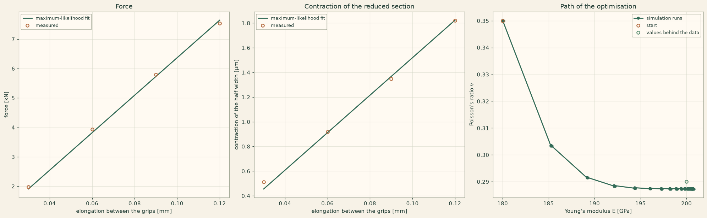
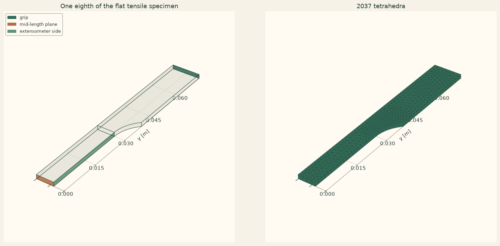

Docs › Examples › Elastic constants from a tensile test by maximum likelihood
Parameter estimation · 3D
Elastic constants from a tensile test by maximum likelihood
Young's modulus and Poisson's ratio of steel identified from the force and the contraction of a flat dog-bone specimen in a tensile test.
Run locally with OneSimulation. The example downloads are free. Running them requires an activated runtime. Runtime Alpha 0.2.1a7 · CPython 3.13 on macOS (Apple Silicon), Ubuntu 22.04 (x86-64), and Windows x64. Installation and activation · View pilot plans. Scope of the reference checks.

What it computes
OneSimulation reads one eighth of the flat specimen from a STEP file and solves 3D small-strain elasticity with quadratic tetrahedra for every trial pair of constants; its parameter-study optimizer minimises the maximum-likelihood misfit, in which force and contraction are weighted by their measurement noise. The measurements are synthetic (known constants plus noise). The script that builds the STEP file comes with the notebook.
What it checks
From noisy force and width-contraction readings the estimate is E = 200.70 ± 1.46 GPa and ν = 0.2873 ± 0.0042 against the 200 GPa and 0.29 behind the data (+0.48 σ and -0.64 σ), with χ² = 8.1 for 8 measurements after 48 3D simulation runs; a plain sum of squares would give the contraction a weight of 2e-19.
Geometry
The notebook starts at the import of the CAD file tensile_test_parameter_estimation.step: STEP (AP242), readable by any CAD program, with the names of the faces that the boundary conditions use. Put it next to the notebook.

The geometry script
The script tensile_test_parameter_estimation_geometry.py builds the geometry with the CAD objects of OneSimulation and writes the file. Change a dimension there, run it, and run the notebook again.
"""Geometry of the OneSimulation example "Young's modulus and Poisson's ratio from a tensile test".
Builds one eighth of a flat dog-bone tensile specimen with the CAD objects of OneSimulation: a
reduced section 12.5 mm wide, 3 mm thick and 60 mm long, fillets of 12.5 mm radius and grip ends
20 mm wide and 30 mm long. The x axis runs across the width, y along the specimen (the pulling
direction) and z through the thickness; the part keeps x >= 0, y >= 0 and z >= 0. It is written to
tensile_test_parameter_estimation.step with the face groups symmetry_x, symmetry_y (mid-length),
symmetry_z (mid-thickness), grip (the pulled end) and gauge_side (the side face of the reduced
section, where the extensometer measures the contraction of the width).
"""
from onesim.cad.d3 import Box, Cylinder
gauge_width, thickness, gauge_length, radius, grip_width, grip_length = (
0.0125,
0.003,
0.060,
0.0125,
0.020,
0.030,
)
shoulder = 0.012
reduced = Box(length=gauge_width / 2, width=gauge_length / 2, height=thickness / 2)
fillet = Box(
length=grip_width / 2,
width=shoulder,
height=thickness / 2,
origin=(0.0, gauge_length / 2, 0.0),
) - Cylinder(
radius=radius,
length=2 * thickness,
origin=(gauge_width / 2 + radius, gauge_length / 2, -thickness / 2),
)
grip = Box(
length=grip_width / 2,
width=grip_length,
height=thickness / 2,
origin=(0.0, gauge_length / 2 + shoulder, 0.0),
)
specimen = reduced | fillet | grip
end = gauge_length / 2 + shoulder + grip_length
plane = lambda axis, value: specimen.select(
faces=lambda face: face.kind == "plane" and abs(face.center[axis] - value) < 1e-9
)
specimen = specimen.grouped(
symmetry_x=plane(0, 0.0),
symmetry_y=plane(1, 0.0),
symmetry_z=plane(2, 0.0),
grip=plane(1, end),
gauge_side=specimen.select(
faces=lambda face: face.kind == "plane"
and abs(face.center[0] - gauge_width / 2) < 1e-9
and face.center[1] < gauge_length / 2
),
)
specimen.save("tensile_test_parameter_estimation.step")The notebook
The complete notebook, cell by cell. Run it to produce the figures and the comparison printout.
In a tensile test the machine records the force \(F\) and an extensometer the contraction of the width of the reduced section. Both depend on Young's modulus \(E\) and Poisson's ratio \(\nu\); in a specimen with fillets and wide grip ends the relation is not a simple formula, so the constants are found by fitting a simulation of the whole specimen to the measurements.
The two kinds of data have very different sizes: forces of about \(10^4\) N, displacements of about \(10^{-6}\) m. A plain least-squares fit adds their squares and simply ignores the contraction. If the measurement errors are independent and Gaussian with standard deviations \(s_F\) and \(s_u\), the maximum-likelihood estimate minimises instead
which weights every measurement by its accuracy and makes the result independent of units.
Setup. A flat steel specimen of the sheet type of ISO 6892-1 and ASTM E8: reduced section 12.5 mm wide, 3 mm thick and 60 mm long, fillets of 12.5 mm radius, grip ends 20 mm wide; the grips pull the ends apart by up to \(2\times0.06\) mm in four steps. The specimen is symmetric about its mid-length, mid-width and mid-thickness planes, so one eighth is modelled. It comes from the CAD file tensile_test_parameter_estimation.step, written by tensile_test_parameter_estimation_geometry.py with the CAD objects of OneSimulation.
| face | condition | |---|---| | symmetry_x (mid-width) | \(u_x=0\) | | symmetry_y (mid-length) | \(u_y=0\) | | symmetry_z (mid-thickness) | \(u_z=0\) | | grip (pulled end) | \(u_y\) prescribed | | all other faces | traction free |
The measurements. There is no laboratory record here. The "measured" force and the contraction of the half width at mid-length on the side face gauge_side are the simulation with \(E=200\) GPa and \(\nu=0.29\), plus Gaussian noise of 1 % of the largest force and 2 % of the largest contraction. Reference: these known constants, which a correct estimate recovers within the standard errors that the noise leaves.
import numpy as np
from onesim.cad.exchange import load
from onesim.meshing import TetrahedralMesher
from onesim.physics.solid_mechanics import SmallStrainSolid
from onesim.simulation.studies import SimulationStudyService, StudyParameter
from onesim.visualization import plots, theme
theme.set()Geometry and mesh
load returns the eighth specimen with its named faces; the mesh has tetrahedra of 1.5 mm, 1 mm in the fillet region.
specimen = load("tensile_test_parameter_estimation.step")
faces = specimen.boundaries
half_width, end = 0.0125 / 2, specimen.size[1]
mesh = TetrahedralMesher(
target_size=0.0015,
size_field=lambda p: np.where(np.abs(p[:, 1] - 0.036) < 0.008, 0.001, 0.0015),
).generate(specimen)
view = plots.Camera(elevation=35, azimuth=-55)
fig = plots.figure(1, 2, size=(14, 6.5))
plots.geometry(
specimen,
selection={
"grip": faces.grip,
"mid-length plane": faces.symmetry_y,
"extensometer side": faces.gauge_side,
},
labels=False,
camera=view,
title="One eighth of the flat tensile specimen",
ax=fig[0],
)
plots.mesh(
mesh,
groups=("all",),
legend=False,
camera=view,
title=f"{mesh.cell_count} tetrahedra",
ax=fig[1],
)
plots.show()Model and synthetic measurements
One simulation per parameter set: 3D small-strain elasticity with quadratic tetrahedra, the grip pulled in four steps. The force of the whole specimen is four times the reaction at the grip of the eighth, the contraction the displacement \(u_x\) of the side face at mid-length and mid-thickness.
pull = np.linspace(0.0, 0.06e-3, 5)
tensile_test = lambda modulus, poisson: SmallStrainSolid(
youngs_modulus=modulus, poisson_ratio=poisson, kinematics="volume"
).solve(
mesh=mesh,
times=pull,
order=2,
displacements=(
(faces.symmetry_x, "x", 0.0),
(faces.symmetry_y, "y", 0.0),
(faces.symmetry_z, "z", 0.0),
(faces.grip, "y", lambda t: t),
),
)
grip = lambda result: np.isclose(result.coordinates[:, 1], end)
readings = lambda result: (
4 * result.reactions[1:, grip(result), 1].sum(axis=1),
result.displacement[1:, probe, 0],
)
true = tensile_test(200e9, 0.29)
probe = int(
np.argmin(np.linalg.norm(true.coordinates - (half_width, 0.0, 0.0), axis=1))
)
force_exact, contraction_exact = readings(true)
noise = np.random.default_rng(2024)
force_error, contraction_error = (
0.01 * force_exact.max(),
0.02 * np.abs(contraction_exact).max(),
)
force_data = force_exact + force_error * noise.standard_normal(4)
contraction_data = contraction_exact + contraction_error * noise.standard_normal(4)Maximum-likelihood estimate
The optimizer works on the stiffness factor \(E/200\) GPa and on \(\nu\), which change the readings by similar relative amounts. Every evaluation is a real 3D simulation; the gradient comes from one extra run per parameter. The misfit handed to it is \(\chi^2/(1.5\cdot10^5)\), which keeps one gradient step below the curvature of the misfit.
likelihood = lambda result: {
"misfit": (
np.sum(((readings(result)[0] - force_data) / force_error) ** 2)
+ np.sum(((readings(result)[1] - contraction_data) / contraction_error) ** 2)
)
/ 1.5e5
}
study = SimulationStudyService(
(StudyParameter("stiffness", 0.75, 1.25), StudyParameter("poisson", 0.2, 0.4)),
lambda values: tensile_test(200e9 * values["stiffness"], values["poisson"]),
likelihood,
solve=lambda result: result,
)
start = {"stiffness": 0.9, "poisson": 0.35}
estimate = study.optimize(
("misfit",),
start=start,
step=1e-3,
maximum_iterations=15,
maximum_runs=300,
tolerance=1e-5,
)
modulus, poisson = (
200 * estimate.parameters["stiffness"],
estimate.parameters["poisson"],
)Comparison with the reference
The recovered constants against the values used to make the data, with standard errors from the Gauss-Newton covariance of the weighted residuals (sensitivities from one more run per parameter), and \(\chi^2\) at the estimate, which should be close to the number of measurements (8) when the fit is as good as the noise. The last line shows why a plain sum of squares in SI units cannot find \(\nu\): at the start the contraction contributes a vanishing share to it.
fitted = readings(tensile_test(1e9 * modulus, poisson))
weighted = lambda r: np.concatenate((r[0] / force_error, r[1] / contraction_error))
sensitivity = np.column_stack(
[
(
weighted(readings(tensile_test(1e9 * (modulus + dE), poisson + dnu)))
- weighted(fitted)
)
/ max(dE, dnu)
for dE, dnu in ((0.2, 0.0), (0.0, 1e-4))
]
)
sigma = np.sqrt(np.diag(np.linalg.inv(sensitivity.T @ sensitivity)))
begin = readings(tensile_test(200e9 * start["stiffness"], start["poisson"]))
print(f"{'':22s} {'E [GPa]':>8s} {'ν':>7s}")
print(f"{'values behind the data':22s} {200.0:8.2f} {0.29:7.4f}")
print(f"{'maximum likelihood':22s} {modulus:8.2f} {poisson:7.4f}")
print(
f"{'standard error':22s} {sigma[0]:8.2f} {sigma[1]:7.4f} deviation {(modulus - 200) / sigma[0]:+.2f} σ and {(poisson - 0.29) / sigma[1]:+.2f} σ "
f"({100 * (modulus / 200 - 1):+.2f} % and {100 * (poisson / 0.29 - 1):+.2f} %)"
)
print(
f"χ² at the estimate: {1.5e5 * estimate.objectives['misfit']:.1f} for 8 measurements; {estimate.run_count} simulation runs, "
f"{estimate.iterations} iterations, converged: {estimate.converged}"
)
print(
f"largest force {force_exact.max() / 1e3:.3f} kN, largest contraction of the half width {-1e6 * contraction_exact.min():.3f} µm"
)
print(
f"share of the contraction in a plain sum of squares at the start: "
f"{np.sum((begin[1] - contraction_data) ** 2) / (np.sum((begin[0] - force_data) ** 2) + np.sum((begin[1] - contraction_data) ** 2)):.1e}"
)Figure
The measured and fitted force and contraction, and the path of the optimisation in the parameter plane.
millimetres = 2e3 * pull[1:]
fig = plots.figure(1, 3, size=(18, 5.5))
plots.line(
y={"maximum-likelihood fit": (millimetres, fitted[0] / 1e3)},
points={"measured": (millimetres, force_data / 1e3)},
xlabel="elongation between the grips [mm]",
ylabel="force [kN]",
title="Force",
legend="upper left",
ax=fig[0],
)
plots.line(
y={"maximum-likelihood fit": (millimetres, -1e6 * fitted[1])},
points={"measured": (millimetres, -1e6 * contraction_data)},
xlabel="elongation between the grips [mm]",
ylabel="contraction of the half width [µm]",
title="Contraction of the reduced section",
legend="upper left",
ax=fig[1],
)
plots.line(
y={
"simulation runs": (
[200 * run.parameters["stiffness"] for run in study.executed_runs],
[run.parameters["poisson"] for run in study.executed_runs],
)
},
points={
"start": ([200 * start["stiffness"]], [start["poisson"]]),
"values behind the data": ([200.0], [0.29]),
},
markers=True,
xlabel="Young's modulus E [GPa]",
ylabel="Poisson's ratio ν",
title="Path of the optimisation",
legend="upper right",
ax=fig[2],
)
plots.show()Going further
Raise the noise of the contraction and watch the uncertainty of \(\nu\) grow while \(E\) stays; measure the contraction of the thickness as well, or move the extensometer into the fillet, where the simple bar formula no longer holds.